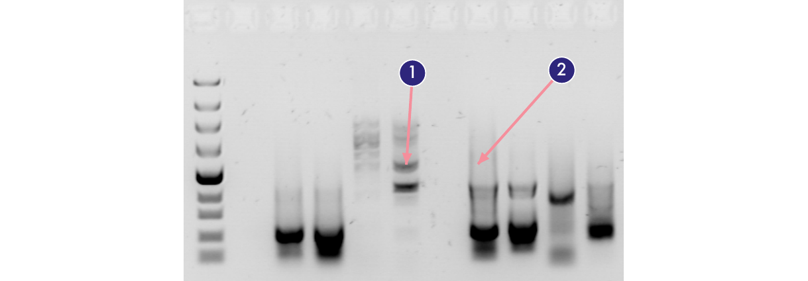
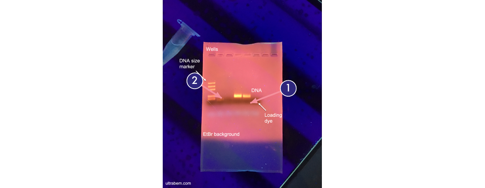

Experiment Information
ID: M02 · Category: Molecular Biology
M02 | ver 1.4 | Revised 2026-10-03
SUSTech-BIO 2026 iGEM Team
Purpose
Check PCR products against their expected fragment sizes, separate the target band, and recover DNA for downstream assembly or cloning. Use a small aliquot for an analytical gel; use the remaining product on a preparative gel when size selection is needed. PCR preparation is described in M01.
Materials & Equipment
| Item | Manufacturer | Identifier / specification | Use / Specification |
|---|---|---|---|
| Agarose | Tsingke | TSJ001 reference product | Standard agarose; 0.7-2.0% examples below [1] |
| SYBR Safe DNA Gel Stain | Thermo Fisher / Invitrogen | 10,000× concentrate; e.g. S33102 | 1× in gel; ready-to-use formats require no further dilution [4] |
| DNA loading buffer | Vazyme | Stock product as supplied | 6× calculation shown below; use the concentration on the tube |
| DNA marker / ladder | Vazyme | MD101 / MD102 / MD103 / MD104 | Select by target size; products are ready to load [3] |
| TAE buffer | Laboratory reagent | 1× working TAE | Same buffer for casting and running |
| DEPC-treated water | Sangon Biotech | B501005 | External laboratory water; kit buffers remain as supplied [17] |
| Horizontal gel tank and power supply | Bio-Rad | Available compatible system | Gel tray, analytical and preparative combs [5] |
| E.Z.N.A. Gel Extraction Kit | Omega Bio-tek | D2500 | HiBind DNA Mini Column, XP2, SPW and Elution Buffer [6] |
| Absolute ethanol | Sangon Biotech | Absolute grade | Prepare SPW as directed on its bottle |
| Sodium acetate | Laboratory reagent | 5 M, pH 5.2 | Use only if binding pH requires adjustment |
| Imager; cutting surface and blade | As available | SYBR Safe-compatible optics | Prefer blue light for DNA to be recovered [4] |
| Balance, heat block, microcentrifuge | Eppendorf centrifuge; laboratory equipment | 60 °C; ≥13,000 × g | Gel weighing, dissolution and column purification |
| Tubes, pipettes, tips; heating vessel | Axygen tips; laboratory equipment | 1.5 / 2 mL tubes | Sample loading, collection and gel casting |
Before You Start
Record each expected linear DNA size, sample identity and lane position. Select gel concentration and ladder before casting. Match each stain and loading-buffer dilution to its stock concentration. Select the ladder by its band map.
Prepare fresh 1× TAE for both gel and tank. For example, dilute 20 mL of 50× TAE to 1 L with water. Set aside the PCR aliquot for checking and retain the rest for recovery.
For extraction, prepare SPW with absolute ethanol using the bottle-specific dilution and preheat the block to 60 °C. Use the D2500 workflow with XP2 and SPW; do not substitute buffers from another kit. [6]
Procedure
A. Select gel concentration and ladder
- Choose agarose concentration using the expected target and the nearest unwanted fragment. The ranges below are broad separation guides; resolving two similar-sized bands may require a longer run or a different gel concentration. [1, 2]
| Agarose (w/v) | Broad linear DNA range | Agarose for 50 mL |
|---|---|---|
| 0.7% | 0.8-12 kb | 0.35 g |
| 1.0% | 0.5-10 kb | 0.50 g |
| 1.5% | 0.2-3 kb | 0.75 g |
| 2.0% | 0.05-2 kb | 1.00 g |
Ranges follow Tsingke TSJ001 guidance. For routine selection, start around 2% for 100-500 bp, 1.5% for 0.5-2 kb, 1% for 2-5 kb, and 0.7-1% for 5-10 kb. These starting choices are an adaptation, not fixed cutoffs. Very short fragments and closely spaced products may need a higher-resolution method.
- Select a Vazyme ladder with reference bands near and, where possible, on both sides of the expected size. Use the actual band map on the product sheet; the largest number in a marker name does not describe its spacing. [3]
| Vazyme option | Reference sizes / useful application |
|---|---|
| 100 bp DNA Ladder (MD104) | 100-1,000 bp in 100 bp steps, plus 1,500 bp; useful for short PCR products. |
| DL2000 Plus (MD101) | 100, 250, 500, 750, 1,000, 1,500, 2,000 bp; routine checks up to 2 kb. |
| DL5000 (MD102) | 100, 250, 500, 750, 1,000, 1,500, 2,000, 3,000, 5,000 bp; medium fragments. |
| DL15000 (MD103) | 250, 1,000, 2,500, 5,000, 7,500, 10,000, 15,000 bp; larger fragments. |
For example, a 350 bp product is easier to size with MD104 than with the widely spaced MD103. A 6 kb product requires a marker extending above 5 kb. The Omega D2500 recovery workflow here is scoped to 100 bp-10 kb; a larger marker range does not extend the extraction scope. [7]
B. Choose the comb and cast the gel
- Choose the comb by the volume after loading-buffer addition and the number of samples. For compatible Bio-Rad mini trays, a 15-well comb suits small analytical aliquots; an 8-well or preparative comb offers wider wells for recovery. Check the actual tray and comb compatibility. [5]
| Purpose | Comb choice | Loading decision |
|---|---|---|
| Analytical PCR check | Many narrow wells; thin teeth where suitable | Allow one lane for ladder. Load a small aliquot to preserve the PCR product. |
| Preparative recovery | Fewer, wider wells or a preparative comb | Use a well with sufficient rated capacity; otherwise divide the sample among adjacent lanes. |
| High-volume or concentrated product | Wide wells with adequate spacing | Both liquid volume and DNA mass matter. A well that holds the liquid may still be overloaded. |
Check the comb/tray capacity at the chosen gel depth. Do not infer capacity from tooth count alone: tooth width, thickness and insertion depth all matter. Avoid casting an unnecessarily thick gel simply to fit more sample, because this increases the amount of agarose to dissolve.
-
Weigh agarose using mass (g) = concentration (%) × buffer volume (mL) / 100. Heat it in 1× TAE until completely clear, swirling between short heating intervals. Use a heat-resistant vessel and protect against hot liquid. [1]
-
Use in-gel SYBR Safe staining for this workflow. For 10,000× concentrate, add 5 µL per 50 mL gel solution to give 1× and mix evenly. A ready-to-use 1× stain replaces the corresponding buffer rather than receiving another 10,000-fold dilution. Protect stain from light. [4]
-
Cool the molten agarose to approximately 60 °C, pour into a level casting tray with the selected comb, and remove bubbles near the teeth. Aim for a gel depth of about 3-5 mm. Leave until fully set, usually 30-60 min, then remove the comb gently. [1]
C. Prepare samples and run the gel
- Prepare a small analytical aliquot from the completed M01 PCR. A practical starting example is 2 µL PCR product + 3 µL water + 1 µL 6× loading buffer: 6 µL total at 1× loading buffer. If the band is saturated, reduce PCR input; if faint, increase the aliquot within the well capacity.
For a separate n× loading stock, add Vsample / (n - 1) of loading buffer, counting any added water in Vsample. For 6× stock, use 1 part loading buffer to 5 parts sample. If a PCR mix already contains ready-to-load buffer, do not automatically add another full dose. Loading buffer and SYBR Safe have different roles: sample density/tracking and fluorescent DNA detection.
| Original PCR | After 2 µL analytical aliquot | 6× loading added | Preparative load |
|---|---|---|---|
| 25 µL | 23 µL remaining | 4.6 µL | 27.6 µL |
| 50 µL | 48 µL remaining | 9.6 µL | 57.6 µL |
These are volume calculations for undiluted remaining PCR with no loading buffer already present. Select a preparative well that holds the resulting volume, or split the prepared mixture across lanes. Pool only matching PCR products with the same intended target.
-
Place the gel with wells toward the black, negative electrode so DNA migrates toward the red, positive electrode. Add 1× TAE to cover the gel according to the tank instructions, clear bubbles from wells, and load without puncturing the well floor.
-
Mix the ladder and load 5 µL of the selected ready-to-use Vazyme marker into a separate lane. Do not add extra loading buffer to these ready-to-use markers. Load samples according to the lane map. [3]
-
Run at constant 120 V for approximately 35 min as the team's usual setting. Check migration and stop before the relevant small fragments leave the gel. Extend or shorten the run according to actual separation; reduce voltage if the gel heats excessively or bands curve.
Voltage must be interpreted using electrode spacing, not gel length: field strength (V/cm) = voltage / electrode distance (cm). At 120 V and 15 cm spacing, the field is 8 V/cm. Vazyme recommends 4-10 V/cm for its routine marker workflow; larger fragments may benefit from lower fields and longer runs. For >5 kb resolution, Thermo guidance gives 1-3 V/cm. Stay within the actual Bio-Rad tank and power-supply ratings. [2, 3]
- Switch off the power before opening the tank. Image the gel using SYBR Safe-compatible excitation and filters, preferably blue light for material to be recovered. Save the image and lane map. If this is an analytical check only, stop here and retain the remaining PCR product. [4]
D. Excise the target and purify with Omega D2500
- On a preparative gel, identify the target against the ladder and excise a compact slice with a clean blade. Exclude neighboring bands and excess agarose. Keep illumination brief; use blue light when available. Transfer the slice to a preweighed tube. [4]
Use the centrifugation workflow below, adapted from the D2500 quick guide. All column spins are at room temperature; the wash/dry/elution spins use maximum speed (≥13,000 × g) within tube and rotor limits. [6]
-
Weigh the slice; 100 mg corresponds to approximately 100 µL gel. Add one gel volume of XP2. Incubate at 60 °C for about 7 min, mixing every 2-3 min until dissolved. [6]
-
Check the dissolved mixture: it should be light yellow. If orange/red, add 5 µL of 5 M sodium acetate, pH 5.2, mix and reassess before loading. [6]
-
Load ≤700 µL onto a HiBind column in its collection tube. Spin at 10,000 × g for 1 min; discard flow-through. Repeat until all sample is loaded. [6]
-
Wash with 300 µL XP2; spin for 1 min and discard flow-through. [6]
-
Wash with 700 µL ethanol-prepared SPW; spin for 1 min and discard flow-through. Repeat this wash for downstream assembly/cloning. [6]
-
Spin the empty column for 2 min, then move it to a clean tube. [6]
-
Apply 30-50 µL Elution Buffer centrally, wait 2 min, and spin for 1 min. Store recovered DNA at -20 °C. [6]
-
Measure recovered DNA concentration and calculate the amount available for the next reaction. Recheck a small eluate aliquot if purity or fragment integrity is uncertain, keeping enough DNA for the intended assembly.
p.s.
Decide whether the gel is for checking or recovery before casting it. A small analytical aliquot preserves most of a 25 or 50 µL PCR; a preparative comb can save several overloaded narrow lanes.
For a weak but distinct target, recover the correct band and quantify the eluate before repeating the PCR. For increasing PCR yield, see M01 > PCR Optimization > O1. Pool only matching products and distribute the load to maintain separation.
Tracking dye is a migration guide, not a molecular-size standard. Its apparent size changes with gel concentration and buffer; compare the DNA band with the ladder. [2]
Trim the slice closely and dissolve it completely. If it remains difficult to dissolve, Omega suggests additional XP2; larger solution volumes require repeated column loading. [7]
Keep fresh running buffer and complete the column drying step. Residual salts or ethanol can impair assembly even when a recovered band looks correct. [6, 7]
Expected Outcome
The analytical gel should show a clearly resolved ladder and a product near the expected size. A correctly sized band supports the intended amplification but does not confirm sequence identity.
After preparative separation, the target should be distinct enough to excise without adjacent products. Record the recovered concentration and volume; usable yield depends on input, fragment size and the downstream requirement.
Troubleshooting
Check the ladder first: a shared defect suggests gel/run/imaging conditions; a sample-only defect suggests loading or sample quality.
Images below are external EtBr examples, not team data or SYBR Safe performance measurements. Arrows identify appearances, not proven causes.
1. Smearing, trailing or extra bands

1: extra discrete bands. 2: vertical trailing above a bright band.
For trailing or smear, shorten exposure, then compare the sample with a 1:5 dilution at equal load volume and 1× loading buffer. Dilution lowers both DNA and salt. If smearing persists, check a fresh or cleaned aliquot; for PCR material, see M01 > PCR Optimization > O1-O2. [8-10]
For discrete extra bands or a short by-product, check expected size and separation, then use M01 > PCR Optimization > O2 (O3 for suspected residual plasmid). Excise only a clearly separated target. [10]
Retama; CC BY-SA 4.0. Original image retained; arrows and notes added by SUSTech-BIO 2026 iGEM Team under the same license. Source [12]; license [15].
2. Broad, ragged or curved bands
1: broad, ragged sample band. 2: curved ladder bands.
Shorten exposure and rerun less sample to distinguish saturation from loading distortion. If the ladder and many lanes bend together, check heating, matching fresh buffer and gel uniformity; lower voltage if hot. Use 120 V / 35 min as a starting point and adjust to separation. [8, 9]
Sgroey; CC BY-SA 4.0. Original image retained; arrows and notes added by SUSTech-BIO 2026 iGEM Team under the same license. Source [13]; license [15].
3. Faint bands, high background or a dark dye zone

1: dark tracking-dye zone. 2: weak band beside stronger bands.
Check SYBR Safe dilution, filter/exposure and the imaging surface. Recast with uniformly mixed stain if background persists. If dye obscures the target, rerun to separate the two; tracking dye does not indicate DNA size. [4, 11]
For a clear ladder but weak sample, check lane identity and loaded volume, then increase the aliquot within well capacity at 1× loading buffer. Missing small ladder bands suggest run-off: shorten the run or raise gel concentration for small targets. Persistent weak PCR product: M01 > PCR Optimization > O1. [10, 11]
Ultrabem; CC0 1.0. Original labels and credit retained; numbered arrows and notes added by SUSTech-BIO 2026 iGEM Team. Source [14]; dedication [16].
4. Neither ladder nor samples are visible
Check power, polarity, 1× TAE and stain/imager compatibility. Re-image if the optical settings were wrong; if DNA has run off the gel, rerun retained material. [4, 8]
5. Target overlaps a neighboring band
Reduce excessive loading. Select gel concentration and local ladder bands using Section A; for close sizes, allow a longer separation at a suitable lower field while the target remains on the gel. Do not excise a merged band. [2, 3, 8]
6. A lane splits, bends locally or leaks
Check for bubbles, damaged wells and excess load volume. Reload into an intact well without piercing its floor; keep loading buffer at 1×. For recovery, use a wider well or divide the sample between wells. [9]
7. DNA remains near the wells
If the ladder also fails to migrate, check power and buffer. If only the sample is affected, check expected size and compare a diluted or cleaned aliquot. Lower agarose concentration only when target size warrants it. [3, 8]
8. Low recovery or poor downstream assembly
For low recovery, check complete gel dissolution, yellow binding mixture, SPW ethanol preparation and elution onto the membrane center (Section D). Quantify total recovered mass. For poor assembly, also check wash-buffer carryover, the drying spin, light exposure and the assembly recipe. [4, 6, 7]
Reference
[1] Tsingke. Agarose, TSJ001: gel preparation and concentration guide, printed pp. 2-4. Revision not reliably readable. Accessed 2026-09-15. Open source
[2] Thermo Fisher Scientific. General Recommendations for DNA Electrophoresis, MAN0012614, pp. 1-2, 2012. General guidance; concentration ranges in this protocol follow Tsingke. Accessed 2026-09-15. Open source
[3] Vazyme. DNA Marker/Ladder, MD101/102/103/104, version 22.2, pp. 1-2. Manufacturer-authored manual hosted by Biorbyt. Accessed 2026-09-15. Open source
[4] Thermo Fisher Scientific / Invitrogen. SYBR Safe DNA Gel Stain FAQs: dilution, in-gel staining and imaging for cloning. Accessed 2026-09-15. Open source
[5] Bio-Rad. Mini-Sub Cell GT Cell: compatible comb formats and gel trays. Manufacturer reference system for tray and comb compatibility. Accessed 2026-09-15. Open source
[6] Omega Bio-tek. E.Z.N.A. Gel Extraction Kit Quick Guide, D2500, QMF28 revision 2.1, p. 1, centrifugation protocol. Manufacturer-authored guide hosted by Froggabio. Accessed 2026-09-15. Open source
[7] Omega Bio-tek. E.Z.N.A. Gel Extraction Kit (V-spin): description and recovery troubleshooting FAQ. Accessed 2026-09-15. Open source
[8] Thermo Fisher Scientific. Nucleic Acid Gel Electrophoresis Troubleshooting: faint, smeared, poorly resolved and curved bands. Accessed 2026-09-15. Open source
[9] Bio-Rad. Sub-Cell GT, Wide Mini-Sub Cell GT, and Mini-Sub Cell GT Agarose Gel Electrophoresis Systems, document 10016027, Section 5, Table 11, printed p. 19 (PDF p. 25). Accessed 2026-09-15. Open source
[10] New England Biolabs. PCR Troubleshooting Guide: no product, incorrect size, multiple/nonspecific products. General principles only; M01 retains its enzyme-specific programs. Accessed 2026-09-15. Open source
[11] Thermo Fisher Scientific. Nucleic Acid Stains, Ladders, and Markers Support - Troubleshooting: stain migration, speckles and missing small bands. Accessed 2026-09-15. Open source
[12] Retama. Unspecific pcr.jpg (2008), 1% agarose, ethidium bromide. Wikimedia Commons; CC BY-SA 4.0 selected from offered licenses. Case 1 image: original image retained; numbered arrows and teaching notes added. Accessed 2026-09-15. Open source

[13] Sgroey. GelDoc DNA gel electrophoresis photograph stained with ethidium bromide 01.jpg. Wikimedia Commons; CC BY-SA 4.0. Case 2 image: original image retained; numbered arrows and teaching notes added. Underlying experiment and root cause are unspecified. Accessed 2026-09-15. Open source

[14] Ultrabem. Agarose gel electrophoresis of DNA with annotation.png (2023). Wikimedia Commons; CC0 1.0. Case 3 image: original labels and credit retained; additional callouts added. Accessed 2026-09-15. Open source

[15] Creative Commons. CC BY-SA 4.0 license. Applies to Images in cases 1-2 and their added annotations; retain attribution, source/license links and modification notice when reusing the plates. Open source
[16] Creative Commons. CC0 1.0 public-domain dedication. Original Case 3 image is provided under this dedication. Open source
[17] Sangon Biotech. B501005 DEPC-treated water, SDS, revision 2024-12-24; product identity. Accessed 2026-10-03. Open source